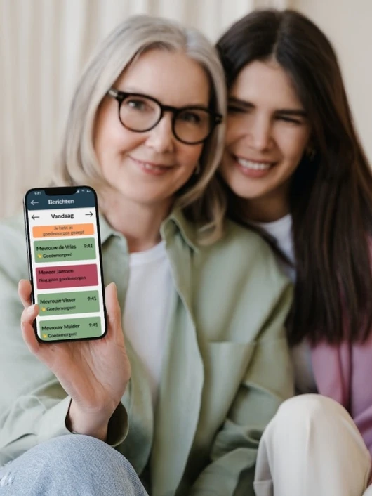

Goedemorgen!
Goedemorgen! is een check-up applicatie voor ouderen. In de applicatie kunnen ouderen zich aansluiten bij een community van buren. Binnen deze community kunnen ze elkaar laten weten dat het nog goed met ze gaat. Ook kunnen ze hulp vragen binnen hun community. Afhankelijk van de vraag kun je hulp vragen vanuit je familie. Als er hulp nodig is, wordt er een verzoek gestuurd.
Dit project is onderdeel van het persoonlijke leerproject in het derde jaar van de opleiding Creative Media and Game Technologies.
Probleemstelling en concept
In 2018 leefde in Nederland alleen al 1,4 miljoen ouderen (SCP, z.d.), daarvan leeft 92% zelfstandig thuis (RIVM, z.d.). Ouderen willen het liefst zo lang mogelijk in hun oude vertrouwde huis blijven wonen. Thuis kan veel gebeuren, je zou kunnen vallen en niet zelf meer in staat zijn om op te staan. Sommige mensen hebben gelukkig directe familie die dichtbij woont, of kunnen zelf nog veel. Maar niet iedereen heeft dit. Het probleem werd toegelicht door de oma van mijn vriend. Zij heeft haar ervaring gedeeld hierover en hoe zij ermee omgaat. Vanuit deze probleemstelling ben ik gaan kijken naar een passende oplossing.

Na goed kijken naar de concurrenten en brainstormen, heb ik de oplossing bedacht: Goedemorgen! Goedemorgen is een mobiele applicatie die buurtbewoners beter probeert te verbinden. Ouderen, maar ook buren, kunnen een account aanmaken en aan een groep deelnemen op basis van postcode. Elke ochtend kunnen ze elkaar met één klik laten weten dat alles goed gaat, door middel van een goedemorgen bericht. Daarnaast kunnen ze binnen een groep hulp vragen wanneer nodig. Bijvoorbeeld voor hulp met opstaan na het vallen of voor boodschappen.
Doelgroeponderzoek
Uit gesprekken met de doelgroep ben ik erachter gekomen dat er een groot nadeel hangt aan Whatsapp. Sommige mensen binnen de doelgroep vinden dat Whatsapp te veel stappen heeft. Het is blijkbaar toch voor sommigen te ingewikkeld. Vanuit deze gevalideerde aanname heb ik besloten de applicatie zo simplistisch mogelijk te houden. Je moet in het minimale aantal stappen kunnen laten weten hoe het gaat.
Wireflow
Bijdrage aan de internationale community
Gedurende het project heb ik meerdere malen contact mogen hebben met de (internationale) tech community. Op deze manier heb ik feedback kunnen ontvangen en gegeven vanuit verschillende perspectieven.
- Finse peerstudenten: we hebben allemaal onze projecten aan elkaar laten zien met bijbehorende uitleg. Vanuit deze gesprekken heeft ieder project feedback gekregen waar we mee aan de slag kunnen gaan.
- Dragon's Den: tijdens de achtste week heeft de dragons den plaatsgevonden. Hierbij kan ik mijn idee pitchen naar proffesionals in het werkveld.
- Creative Tech Fest: in de laatste weken van het project is het creative techfest. Dit vindt plaats bij het bedrijf Redkiwi.
Hieruit meerdere feedbackpunten; zoals bijvoorbeeld het toevoegen van stemgebruik, valdetectie, het gebruik van React Native, hoe groepen ontstaan en het missen van goedemorgen berichten.
Kickstarter video
Als onderdeel van de opdracht is er ook een Kickstarter video worden gemaakt.
React Native applicatie
Code bekijken op Github